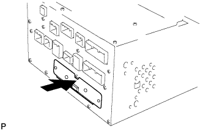

HARD DISK DRIVE > INSTALLATION |
| 1. INSTALL HARD DISC |
|  |
Push the hard disc in the direction of the arrow shown in the illustration to install it.
Install the 2 screws.
| 2. INSTALL DISPLAY AND NAVIGATION MODULE DISPLAY |
Install the display and navigation module display (Click here).
| 3. CONNECT CABLE TO NEGATIVE BATTERY TERMINAL |